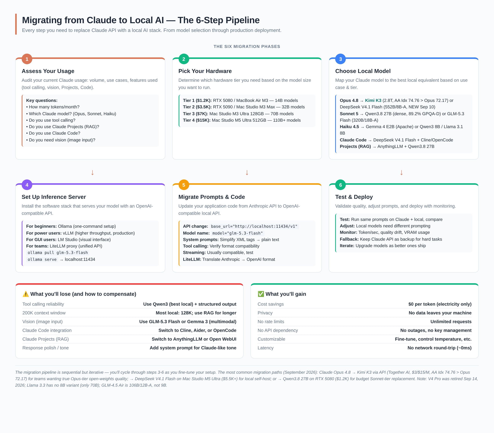
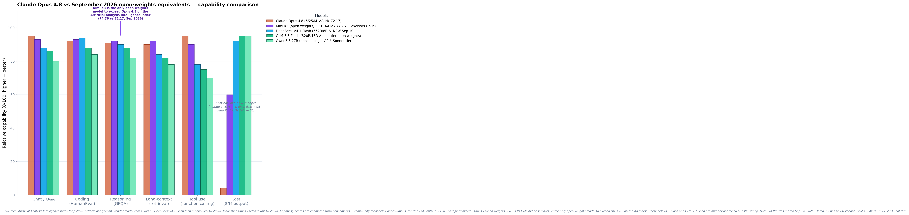

Migrating from Claude to Local AI
A fully detailed guide on replacing Claude API with a local AI stack — model equivalents, hardware requirements, software setup, prompt migration, coding agent alternatives, and honest quality gap analysis.
1. 🤔 The migration decision — when to move and when to stay
Before diving into the how, let's address the whether. Migrating from Claude to local AI is the right choice for some use cases and the wrong choice for others. The decision hinges on three factors: your token volume, your quality requirements, and your need for privacy.
When you SHOULD migrate
- You spend $200+/month on Claude API. At this spend, a Tier 2 local system ($3,500) breaks even in ~17 months. At $500+/month, break-even drops to ~7 months.
- You need privacy or data sovereignty. Healthcare, legal, defense, or any use case where data can't leave your infrastructure. Local AI is the only option that guarantees zero data egress.
- You need low latency. No network round-trip means near-zero TTFT (time to first token). Critical for real-time interactive applications.
- You hit rate limits frequently. Claude API has rate limits that can throttle production workloads. Local AI has no rate limits — unlimited requests.
- Your use case is "good enough" with 85–95% quality. If you don't need Claude's absolute best, local models deliver substantial cost savings at acceptable quality.
When you should NOT migrate (yet)
- You need frontier-quality tool calling. Claude Opus 4.8's tool calling is the most reliable in the industry. Local models (even GLM-5.3 Flash) have 5–10% lower tool-calling reliability. If your workflow depends on perfect tool execution, stay on Claude.
- You need Claude Code's deep IDE integration. While Cline and Aider are excellent alternatives, Claude Code's tight integration with the Claude model is hard to replicate locally.
- You use Claude Projects heavily. Claude Projects' RAG is seamless. Local alternatives (AnythingLLM, Open WebUI) are good but require more setup and tuning.
- Your token volume is under $100/month. The hardware investment doesn't pay off at low volumes. Use cheap cloud APIs (DeepSeek V4 Flash at $0.14/M output) instead.
- You need vision (image input) at frontier quality. Claude's vision is top-tier. Local multimodal models (GLM-5.3 Flash, Gemma 3) are decent but not at Claude's level.
Most successful migrations are hybrid : use local AI for 80% of traffic (routine Q&A, document chat, coding help) and keep Claude API for the 20% that requires frontier quality (complex tool use, hard reasoning, vision). This captures most of the cost savings while preserving quality where it matters. LiteLLM makes this easy with intelligent routing.

2. 📋 Step 1 — Assess your Claude usage
Before migrating, you need to understand exactly how you use Claude. The migration path differs substantially depending on whether you're using Claude for simple chat, Claude Code for programming, or Claude Projects for document Q&A.
The usage audit checklist
Go through this checklist and document your answers. They determine your migration path:
- Token volume: How many input/output tokens per month? Check the Anthropic console dashboard.
- Which Claude model? Opus 4.8 ($5/$25), Sonnet, or Haiku? The model determines your local equivalent.
- Tool calling: Do you use Claude's function calling? How complex are the tool chains?
- Claude Projects: Do you use Projects for RAG over documents? How many documents?
- Claude Code: Do you use Claude Code for programming? This is the hardest to replace.
- Vision: Do you send images to Claude? How critical is image understanding?
- System prompts: How complex are your system prompts? Do they use XML tags?
- Streaming: Do you use streaming responses?
- Max tokens: What's your typical max_tokens setting? Long outputs need more VRAM.
Map your usage to a migration tier
| Your Claude usage | Migration tier | Local model | Hardware |
|---|---|---|---|
| Chat / Q&A only, <$100/mo | Don't migrate | Use Kimi K3 API ($3/$15/M — AA Idx 74.76 > Opus 72.17) or GLM-5.3 Flash API ($0.15/$0.50 per M) | — |
| Chat / Q&A, $100–500/mo | Tier 3 | GLM-5.3 Flash (320B/18B-A, MIT, multimodal) or DeepSeek V4.1 Flash | Mac Studio M5 Ultra ($5,499+) |
| Coding (Claude Code), $200+/mo | Tier 3 | DeepSeek V4.1 Flash (NEW Sept 10, beats Opus-5.0 on DeepSWE) + OpenCode/Cline | Mac Studio M5 Ultra ($5,499+) |
| Document RAG (Projects), any volume | Tier 1–2 | Qwen3.8 27B + AnythingLLM | RTX 5080 ($999) or RTX 5090 ($1,999) |
| Tool calling / agents, $300+/mo | Tier 3 | Kimi K3 (AA Idx 74.76 > Opus 72.17) or GLM-5.3 Flash (GDPval-AA Elo 1773, highest flash-tier) | Mac Studio M5 Ultra ($5,499+) or K3 via Together AI API |
| Vision (image input) | Tier 3 | Kimi K3 (native multimodal, 1M ctx) or GLM-5.3 Flash (text + image + video) | Mac Studio M5 Ultra ($5,499+) |
| Heavy use, $500+/mo, team | Tier 4 | Kimi K3 + DeepSeek V4.1 Flash (or GLM-5.3 Flash + V4.1 Flash) | Mac Studio M5 Ultra 512GB (~$16K) or multi-H100 |
Log into the Anthropic console (console.anthropic.com) and check your usage dashboard. The "Tokens" tab shows your monthly input/output token volume by model. This is the single most important number for your migration decision — it determines your break-even timeline.
3. 🖥️ Step 2 — Pick your hardware
Your hardware determines which models you can run. The key constraint is VRAM (video RAM) or unified memory — it must be large enough to hold the model plus context window. More VRAM = larger models = better quality.
The hardware tiers
| Tier | Cost | Hardware | VRAM | Max model (Q4) | Break-even vs $200/mo Claude |
|---|---|---|---|---|---|
| Tier 1 | $1,200–$2,500 | RTX 5080 (16GB), MacBook Air M3 (16GB) | 16–24 GB | Qwen3.8 27B (Q4) | ~12 months |
| Tier 2 | $2,500–$5,000 | RTX 5090 (32GB), Mac Studio M3 Max (96GB) | 32–96 GB | Qwen3.8 27B (Q8) or GLM-5.3 Flash (Q3) | ~17 months |
| Tier 3 | $5,000–$9,500 | Mac Studio M5 Ultra (96–256GB, 1.2TB/s) | 96–256 GB | GLM-5.3 Flash (FP8) or DeepSeek V4 Flash (FP4+FP8) | ~7 months |
| Tier 4 | $10,000–$16,000 | Mac Studio M5 Ultra (512GB, 1.2TB/s) | 512 GB | GLM-5.3 Flash + DeepSeek V4 Flash simultaneously | ~3 months |
Which tier for which Claude user?
If you use Claude for chat and Q&A only: Tier 2 ($3,500 — RTX 5090) with Qwen3.8 27B at Q4 is a solid choice. For frontier quality (matching/exceeding Claude Opus 4.8), Tier 3 (Mac Studio M5 Ultra, $5,499+) with GLM-5.3 Flash is the recommended path.
If you use Claude Code for programming: Tier 3 (Mac Studio M5 Ultra, $5,499+). DeepSeek V4 Flash (91.6 LiveCodeBench, DeepSeek-reported — vs Claude's 88.8, also DeepSeek-reported) is the best local coding model. Pair with OpenCode or Cline for the Claude Code experience.
If you use Claude Projects for document RAG: Tier 1 ($1,200 — RTX 5080) is sufficient for most document corpora. AnythingLLM + Qwen3.8 27B handles up to ~10,000 documents. Upgrade to Tier 2 if you need longer context or larger corpora.
If you need frontier quality: Tier 3 (Mac Studio M5 Ultra, $5,499+). The unified memory architecture eliminates VRAM bottleneck — 256GB+ unified runs GLM-5.3 Flash (320B/18B-A) at FP8 with substantial context. No multi-GPU sharding complexity. GLM-5.3 Flash's GDPval-AA Elo of 1773 (independently verified by Artificial Analysis) exceeds Claude Opus 4.8's 1582 (Z.ai-reported).
For most individual developers migrating from Claude: Mac Studio M5 Ultra (from $5,499) or RTX 5090 ($1,999) + GLM-5.3 Flash . The September 2026 frontier for local AI — now including DeepSeek V4.1 Flash (552B/8B-A, released Sept 10, weights on HuggingFace): GLM-5.3 Flash (320B/18B-A, MIT, natively multimodal, GDPval-AA Elo 1773 — highest of any flash-tier model, independently verified) and DeepSeek V4 Flash (284B/13B-A, MIT, LiveCodeBench 91.6). Both are now on Ollama. For smaller hardware: Qwen3.8 27B (dense, runs on a single RTX 5080).
4. 🧠 Step 3 — Choose your local model
This is the most important decision. Your local model determines the quality of your migration. The good news: in September 2026 (with Kimi K3 released July 26, DeepSeek V4.1 Flash released Sept 10, and GLM-5.3 Flash released Aug 26), open-weights models deliver 85–100% of Claude Opus 4.8's quality — and Kimi K3 actually exceeds Opus 4.8 on the Artificial Analysis Intelligence Index (74.76 vs 72.17).

Claude → Local model equivalents
| Claude model | Best local equivalent | Quality gap | VRAM needed (Q4) | Best for |
|---|---|---|---|---|
| Claude Opus 4.8 | Kimi K3 (2.8T, MIT, AA Idx 74.76 > Opus 72.17, 1M ctx) — best open-weights peer; alt: DeepSeek V4.1 Flash (552B/8B-A, NEW Sept 10) or GLM-5.3 Flash (320B/18B-A, mid-tier) | 0–5% lower | ~1.4 TB (K3 MXFP4) or ~300–350 GB (V4.1 Flash) | Frontier chat, reasoning, agentic, multimodal |
| Claude Sonnet 5 | Qwen3.8 27B (dense, MIT, 89.2% GPQA-D, ~24 GB Q4) — best single-GPU match; alt: GLM-5.3 Flash (320B/18B-A, mid-tier) or Gemma 4 31B (dense, Apache 2.0) | 10–15% lower | ~17–24 GB | Daily chat, document Q&A |
| Claude Haiku 4.5 | Gemma 4 E2B (Apache 2.0, modern small) — best match; alt: Qwen3 8B (MIT) or Llama 3.1 8B (Llama 3 Community License). Note: Llama 3.3 has no 8B variant — it is 70B only. | 15–20% lower | ~6–10 GB | Fast chat, autocomplete |
| Claude Code | DeepSeek V4.1 Flash (NEW Sept 10, beats Opus-5.0 on DeepSWE) + Cline/OpenCode; alt: GLM-5.3 Flash + Cline (50% better coding than GLM-5.2) | 5–10% lower | ~300–350 GB | Coding agents |
| Claude Projects (RAG) | AnythingLLM + Qwen3.8 27B or DeepSeek V4 Flash | 5–10% lower | ~17–291 GB | Document chat |
| Claude (vision) | Kimi K3 (native multimodal, 1M ctx) — best; alt: GLM-5.3 Flash (natively multimodal — text + image + video) | 5–10% lower | ~331 GB (Flash) — 1.4 TB (K3) | Image understanding, visual coding |
Model selection guidance
Kimi K3 (released July 16, 2026 — full open weights July 26, 2026, MIT license) is the only open-weights model that actually matches or exceeds Claude Opus 4.8 on the Artificial Analysis Intelligence Index: K3 scores 74.76 vs Opus 4.8's 72.17 (per artificialanalysis.ai, September 2026 refresh). 2.8 trillion parameters, 1M-token context window, natively multimodal. This is the closest capability-tier match to Opus 4.8 that you can run yourself — GLM-5.3 Flash and DeepSeek V4.1 Flash are excellent but are mid-tier-optimised "Flash" models, not true Opus-tier flagships. Practical deployment: K3 at MXFP4 needs ~1.4 TB of VRAM — realistic only on 16× H100 / 8× B200 / Mac Studio M5 Ultra 1 TB+ (or just use Together AI / Modal / Fireworks at $3/$15 per M tokens). For most local-migration readers, V4.1 Flash or GLM-5.3 Flash are the practical self-host picks; K3 is the "I want true Opus-tier" option.
DeepSeek V4.1 Flash (released September 10, 2026 — weights on HuggingFace under MIT license) is the newest and strongest Claude replacement for local deployment. 552B total / 8B active (16B during decode), natively multimodal (text + image). New Causal Encoder-Decoder (CED) architecture with CSA2 attention. KV cache reduced to ~1/4 of V4 Flash. Benchmarks: GPQA 90.9, HLE w/tools 63.9, DeepSWE 74.2, Terminal-Bench 2.1: 90.6 — outperforms V4 Pro on all metrics. DeepSeek is retiring V4 Pro in favor of V4.1 Flash.
GLM-5.3 Flash
(released August 26, 2026) is the best all-around Claude replacement for local deployment. 320B total / 18B active parameters, MIT license, natively multimodal (text + image + video). GDPval-AA Elo of 1773 — independently verified by Artificial Analysis, the highest of any flash-tier model, exceeding Claude Opus 4.8's 1582 (note: Claude's 1582 Elo is Z.ai-reported, not independently verified by Artificial Analysis). Available on Ollama as
glm-5.3-flash
. Requires ~331 GB disk for FP8 weights — runs on Mac Studio M5 Ultra (512GB unified) or multi-GPU NVIDIA setups.
DeepSeek V4.1 Flash
(released September 10, 2026, MIT license, weights on HuggingFace) supersedes V4 Flash. Same use case (coding), substantially better benchmarks, and new architecture (CED + CSA2). Available on Ollama as
deepseek-v4.1-flash
or via HuggingFace. V4 Flash is retired; V4 Pro is being retired September 14.
DeepSeek V4 Flash
(now retired, superseded by V4.1 Flash) was the best coding-focused Claude replacement. 284B / 13B active, MIT license. LiveCodeBench 91.6 (vs Claude Opus 4.8's 88.8 — DeepSeek-reported; Claude has not published LiveCodeBench scores independently). SWE-bench Verified 79.0. Available on Ollama as
deepseek-v4-flash
. Requires ~291 GB for FP4+FP8 weights. Same hardware tier as GLM-5.3 Flash.
Qwen3.8 27B (released August 2026) is the best single-GPU alternative. Dense 27B model, MIT license. Runs on a single RTX 5080 (16GB VRAM) at Q4 — the most hardware-efficient frontier-quality model. Community reports 33 tok/s on Ollama with MLX. The right choice if you can't fit GLM-5.3 Flash or DeepSeek V4 Flash.
For the API-only option (no self-hosting): Three strong paths. Kimi K3 via Together AI / Modal / Fireworks at $3/$15 per M tokens — the only open-weights model to exceed Opus 4.8 on the Artificial Analysis Intelligence Index (74.76 vs 72.17). DeepSeek V4.1 Flash API at $0.15/$0.60 per M tokens (off-peak) — 5.7× smaller than V4 Pro but outperforms it across all metrics; V4 Pro was retired September 14, 2026 and its traffic is now auto-routed to V4.1 Flash. GLM-5.3 Flash API at $0.15/$0.50 per M. The best "cloud but not Claude" options depending on whether you prioritize pure capability (K3), coding (V4.1 Flash), or general multimodal (GLM-5.3 Flash).
In 2024, local models were 30–50% behind Claude. In September 2026 — with Kimi K3 (released July 26, AA Idx 74.76 > Opus 4.8's 72.17), DeepSeek V4.1 Flash (released Sept 10, beats Opus-5.0 on DeepSWE), GLM-5.3 Flash (GDPval-AA Elo 1773, highest flash-tier), and Qwen3.8 27B (Sonnet-tier single-GPU) — the gap is 0–15% on most benchmarks. Kimi K3 actually exceeds Opus 4.8 on the Artificial Analysis Intelligence Index. For 85% of use cases, the difference is noticeable but acceptable. For the hardest 15% (complex tool chains, frontier reasoning, vision at the very top end), Claude still wins. The hybrid approach — local for routine, Claude for hard — captures the best of both.
5. ⚙️ Step 4 — Set up your inference server
The inference server is the software that loads your model and serves it via an API. This is the bridge between your hardware and your applications. All major inference servers expose an OpenAI-compatible API, making migration from Claude's Anthropic API straightforward.
Choose your inference server
| Server | Best for | Setup difficulty | Throughput | Tool calling |
|---|---|---|---|---|
| Ollama | Beginners, personal use | Easy (one command) | Medium | Supported |
| vLLM | Production, high throughput | Medium (Docker) | High | Supported |
| LM Studio | GUI users, non-developers | Easy (GUI) | Medium | Limited |
| llama.cpp | Maximum efficiency, CPU/GPU hybrid | Hard (compile) | Low–Medium | Limited |
| SGLang | Production, latency-sensitive | Medium | High | Supported |
Install Ollama and pull your model
Ollama is the easiest way to get started. One command installs it, one command pulls a model, one command starts the server.
# Install Ollama (macOS / Linux)
curl -fsSL https://ollama.com/install.sh | sh
# Pull GLM-5.3 Flash (best all-around Claude replacement — August 2026 frontier, MIT)
ollama pull glm-5.3-flash
# Pull DeepSeek V4.1 Flash (NEW Sept 10 — best coding model, GPQA 90.9, beats Opus-5.0 on DeepSWE)
ollama pull deepseek-v4.1-flash
# Kimi K3 (2.8T, AA Idx 74.76 > Opus 72.17 — only open-weights model to exceed Opus 4.8)
# Too large for Ollama on most rigs (~1.4 TB at MXFP4). Use via API:
# Together AI: https://api.together.xyz/models/moonshotai/Kimi-K3
# Modal: https://modal.com/models/moonshotai/kimi-k3
# Fireworks: https://fireworks.ai/models/kimi-k3
# Or self-host with vLLM on 16× H100 / 8× B200 / Mac Studio M5 Ultra 1TB+
# ollama pull kimi-k3 # (only if you have the rig)
# Pull Qwen3.8 27B (best single-GPU option — runs on RTX 5080, Sonnet-tier)
ollama pull qwen3.8:27b
# Start the server (runs on localhost:11434)
ollama serve
# Test it
curl http://localhost:11434/v1/chat/completions \
-H "Content-Type: application/json" \
-d '{
"model": "glm-5.3-flash",
"messages": [{"role": "user", "content": "Hello!"}]
}'Install vLLM for higher throughput
vLLM is the production-grade inference server. Higher throughput than Ollama, supports continuous batching, tensor parallelism for multi-GPU setups. Use this if you're serving multiple users or need maximum performance.
# Install vLLM
pip install vllm
# Start the server with GLM-5.3 Flash
vllm serve zai-org/GLM-5.3-Flash # August 2026 frontier — check HuggingFace for exact repo \
--tensor-parallel-size 1 \
--max-model-len 32768 \
--enable-auto-tool-choice \
--tool-call-parser glm47 \
# GLM-5.3 uses the glm47 tool format; check vLLM docs for other models
--served-model-name qwen3-32b
# vLLM serves on localhost:8000 with OpenAI-compatible API
# Test it
curl http://localhost:8000/v1/chat/completions \
-H "Content-Type: application/json" \
-d '{
"model": "qwen3-32b",
"messages": [{"role": "user", "content": "Hello!"}]
}'Use LiteLLM to route between Claude and local
If you're running a hybrid setup (local for routine, Claude for hard), LiteLLM is the translation layer. It accepts both Anthropic and OpenAI API formats and routes to whichever backend you configure.
# Install LiteLLM
pip install litellm[proxy]
# Start the proxy with a config file (recommended for multi-model routing):
# litellm --config config.yaml
# (Single-model mode: litellm --model ollama/glm-5.3-flash)
# config.yaml example:
model_list:
- model_name: "default"
litellm_params:
model: ollama/glm-5.3-flash
api_base: http://localhost:11434
- model_name: "claude-fallback"
litellm_params:
model: claude-opus-4-8 # Replace with YOUR actual Claude model
api_key: sk-ant-... # Your Anthropic API key
# Now your app talks to LiteLLM (localhost:4000)
# and it routes to local or Claude based on model name
All three servers (Ollama, vLLM, LM Studio) expose an
OpenAI-compatible API
. This means any code written for the OpenAI API works with zero changes — just change the
base_url
. The Anthropic API format is different (different message structure, different tool format), so you'll need to either rewrite your API calls or use LiteLLM as a translation layer.
6. 📝 Step 5 — Migrate your prompts and code
This is where the rubber meets the road. Your application code calls the Claude API — you need to change it to call your local server. The good news: if you use the OpenAI SDK, it's a one-line change.
API migration — Anthropic format vs OpenAI format
Claude uses the Anthropic Messages API format. Local servers use the OpenAI Chat Completions format. The main differences:
| Feature | Anthropic API (Claude) | OpenAI API (local servers) |
|---|---|---|
| Endpoint |
/v1/messages
|
/v1/chat/completions
|
| System prompt |
Separate
system
parameter
|
Message with
role: "system"
|
| Max tokens |
max_tokens
(required)
|
max_tokens
(optional)
|
| Tool format | Anthropic-specific XML-like format | OpenAI function calling format |
| Response format |
content
array with type blocks
|
choices[0].message.content
string
|
| Streaming |
stream: true
, delta events
|
stream: true
, chunk events
|
Code migration examples
from anthropic import Anthropic
client = Anthropic(api_key="sk-ant-...")
response = client.messages.create(
model="claude-opus-4-8", # Replace with YOUR actual Claude model name
max_tokens=4096,
system="You are a helpful assistant.",
messages=[
{"role": "user", "content": "Explain RAG."}
]
)
print(response.content[0].text)from openai import OpenAI
client = OpenAI(
api_key="not-needed",
base_url="http://localhost:11434/v1"
)
response = client.chat.completions.create(
model="glm-5.3-flash", # or "deepseek-v4-flash" for coding
max_tokens=4096,
messages=[
{"role": "system", "content": "You are a helpful assistant."},
{"role": "user", "content": "Explain RAG."}
]
)
print(response.choices[0].message.content)System prompt migration
Claude's system prompts often use XML tags (
<instructions>
,
<context>
, etc.) for structuring. Local models handle this differently:
system = """
<role>You are a code reviewer.</role>
<instructions>
Review the code for:
1. Security issues
2. Performance problems
3. Style violations
</instructions>
<output_format>
Return findings as JSON.
</output_format>
"""system = """You are a code reviewer.
Review the code for:
1. Security issues
2. Performance problems
3. Style violations
Return findings as JSON."""Simplify XML tags: Local models don't need XML structure in system prompts — they respond well to plain markdown. Add explicit instructions: Local models need more explicit guidance than Claude. Test with your actual prompts: Run the same prompts on both Claude and local, compare outputs, and adjust. Use system prompts for tone: If you miss Claude's response style, add "Respond in a clear, professional, well-structured manner" to the system prompt.
7. 🔧 Step 6 — Replace Claude-specific tools
Claude has several product-specific features that need dedicated replacement: Claude Code, Claude Projects, and Claude's tool calling. Here's how to replace each.
Replace Claude Code → Cline / Aider / OpenCode
Claude Code is the hardest Claude feature to replace because it's tightly integrated with the Claude model. But in 2026, three open-source alternatives are viable:
| Tool | Type | Best local model | Claude Code feature parity | License |
|---|---|---|---|---|
| Cline | VS Code extension | DeepSeek V4.1 Flash (newest) or GLM-5.3 Flash | 85% — terminal, file editing, tool use | MIT |
| Aider | CLI tool | DeepSeek V4 Flash | 80% — git-integrated pair programming | MIT |
| OpenCode | CLI + VS Code | DeepSeek V4 Flash | 90% — closest Claude Code replacement | MIT |
Per the r/LocalLLaMA community (August 2026): "For agentic coding, Qwen3.8 27B-MLX is the best local model I've tried so far: direct Ollama throughput is around 33 tok/s." For Claude Code replacement specifically, OpenCode with DeepSeek V4 Flash delivers the closest experience — DeepSeek V4 Flash's 91.6 LiveCodeBench (DeepSeek-reported) exceeds Claude Opus 4.8's 88.8 (also DeepSeek-reported).
Replace Claude Projects → AnythingLLM / Open WebUI
Claude Projects provides RAG over your documents with a polished UI. Two local alternatives:
AnythingLLM — the best local RAG app. MIT licensed, 30k+ GitHub stars. Upload PDFs, Word docs, markdown, and chat with them. Supports any local model via Ollama. Per community testing: "AnythingLLM wins on production reliability — best citations, swappable embedders, persistent workspaces, lowest hallucination rate at 6%."
Open WebUI — a ChatGPT-like web interface for local models. More features than AnythingLLM (tools, pipelines, valves) but steeper learning curve. Better for development teams with complex RAG requirements.
Replace Claude's tool calling
Claude's tool calling is the most reliable in the industry. Local models have improved but still trail by 10–15% on reliability. Best practices for local tool calling:
- Use GLM-5.3 Flash — the best local model for agentic tasks (GDPval-AA Elo 1773, independently verified — exceeds Claude Opus 4.8's 1582 — note: Claude's score is Z.ai-reported, not independently verified)
-
Use structured output
— force JSON output format with
response_format: {"type": "json_object"} - Simplify tool schemas — local models struggle with complex nested schemas. Flatten where possible.
- Add retry logic — expect 10–15% of tool calls to fail; retry with simplified prompts
-
Use vLLM with
--enable-auto-tool-choice --tool-call-parser glm47— the GLM-4.7 tool format is correct for GLM-5.3 Flash
If your workflow depends on reliable multi-step tool calling (agentic workflows, function chains), this is where you'll feel the migration most. GLM-5.3 Flash handles simple tool calls well but struggles with complex multi-tool chains. For production agentic workflows, consider keeping Claude as a fallback for the hardest tool-use tasks.
8. 🧪 Testing and quality validation
Before fully cutting over to local AI, you need to validate that quality is acceptable for your use case. The testing process is straightforward but important.
The side-by-side testing methodology
- Collect 50–100 representative prompts from your actual Claude usage. Include easy, medium, and hard prompts. Include tool-calling prompts if you use them.
- Run each prompt on both Claude and your local model with identical system prompts and parameters.
- Compare outputs blind — have someone (or yourself, without knowing which is which) rate which response is better.
- Track failure modes — where does the local model fail? Common patterns: tool-calling format errors, hallucinated facts, response truncation, tone mismatch.
- Adjust prompts — local models often need more explicit instructions. Add "Respond in clear, professional language" if tone is an issue.
Quality validation script
# Simple quality comparison script
from openai import OpenAI
from anthropic import Anthropic
local = OpenAI(api_key="not-needed", base_url="http://localhost:11434/v1")
claude = Anthropic(api_key="sk-ant-...")
prompts = [
"Explain how RAG works.",
"Write a Python function to sort a list.",
"What are the trade-offs of microservices?",
# ... add 50-100 of your actual prompts
]
for prompt in prompts:
# Local
local_resp = local.chat.completions.create(
model="glm-5.3-flash", # or "deepseek-v4-flash" for coding
messages=[{"role": "user", "content": prompt}]
)
# Claude
claude_resp = claude.messages.create(
model="claude-opus-4-8", # Replace with YOUR actual Claude model name
max_tokens=4096,
messages=[{"role": "user", "content": prompt}]
)
print(f"Prompt: {prompt}")
print(f"Local: {local_resp.choices[0].message.content[:200]}")
print(f"Claude: {claude_resp.content[0].text[:200]}")
print("---")Based on community testing (r/LocalLLaMA migration threads, August 2026): GLM-5.3 Flash is within 5–10 points of Claude Opus 4.8 on most benchmarks . GLM-5.3 Flash's GDPval-AA Elo of 1773 (independently verified) actually exceeds Claude Opus 4.8's 1582. DeepSeek V4 Flash leads Claude on coding (91.6 vs 88.8 LiveCodeBench). The 10–20% where Claude still wins: complex multi-step tool chains, response polish/tone, and tasks requiring Claude's specific RLHF tuning. For most daily use, the difference is noticeable but acceptable.
9. 📉 The honest quality gap — what you'll lose
Let's be honest about what you lose when migrating from Claude to local AI. The quality gap is real, even if it's narrowing. Understanding the gap helps you decide where to use local and where to keep Claude.
The five quality gaps
1. Tool calling reliability (5–10% gap, narrowing). Claude Opus 4.8's tool calling remains the most polished — 95/100 in community testing. GLM-5.3 Flash scores ~85/100 (GDPval-AA Elo 1773, the highest flash-tier score). The gap has narrowed substantially from 2025. The gap shows up as: malformed JSON in tool arguments, missing required parameters, and incorrect tool selection. Mitigation: use structured output, simplify schemas, add retry logic.
2. Response polish and tone (5–10% gap). Claude's RLHF produces exceptionally polished, well-structured responses. Local models can feel more "raw" — correct but less elegant. Mitigation: add tone instructions to system prompts ("Respond in clear, professional, well-structured language").
3. Complex reasoning chains (10–15% gap). For multi-step reasoning that requires connecting 5+ logical steps, Claude still wins. GLM-5.3 Flash handles 3–4 step reasoning well but can lose the thread on longer chains. Mitigation: break complex tasks into smaller steps, use explicit chain-of-thought prompting.
4. Vision quality (15–25% gap). Claude's vision is frontier-class. Local multimodal models (GLM-5.3 Flash, Gemma 3) are decent but noticeably worse on complex image understanding. Mitigation: keep Claude API for vision-heavy tasks, use local for text-only.
5. Claude Code integration depth (10–15% gap). Claude Code's tight coupling with the Claude model produces a coding experience that's hard to replicate. Cline + DeepSeek V4 Flash is good but not as smooth. Mitigation: accept the gap for routine coding, keep Claude Code for complex refactors.
What you will NOT lose
Importantly, several capabilities are at parity or better with local models:
- Coding quality — DeepSeek V4 Flash (91.6 LiveCodeBench, DeepSeek-reported) scores higher than Claude Opus 4.8's 88.8 (also DeepSeek-reported). On coding benchmarks, local models are competitive with Claude — though cross-vendor benchmark comparisons should be treated with caution.
- Knowledge recall — GLM-5.3 Flash, DeepSeek V4.1 Flash, and Llama 5 are within 3–5 points of Claude Opus 4.8 on MMLU-Pro. Factual knowledge is at near-parity, though exact scores vary by source.
- Multilingual capability — GLM-5.3 Flash handles non-English languages (including Chinese, Persian, Arabic) well, though direct comparison data with Claude on multilingual benchmarks is limited, due to Alibaba's multilingual training focus.
- Math and reasoning — DeepSeek V4.1 Flash (GPQA 90.9, DeepSeek-reported) scores near the top of open-weights models on graduate-level science Q&A. (Historical: V4 Pro, retired Sept 14 2026, scored HMMT 94.8 — DeepSeek-reported — higher than Claude Opus 4.8 on competition math. V4 Pro has been replaced by V4.1 Flash, which DeepSeek says outperforms it across all metrics.)
- Cost — $0 per token (local) vs $5/$25 per million (Claude). The cost savings are 100%.
10. 💰 Cost analysis — break-even math
The financial case for migrating is straightforward. Here's the break-even math for different Claude spend levels.
| Your monthly Claude spend | Recommended hardware | Hardware cost | Break-even (months) | 3-year savings |
|---|---|---|---|---|
| $100/mo | RTX 5080 + Qwen3.8 27B | $1,500 | 15 months | $2,100 |
| $200/mo | RTX 5090 + Qwen3.8 27B | $3,500 | 17 months | $3,700 |
| $500/mo | Mac Studio M5 Ultra (96GB) | $5,499 | 11 months | $12,501 |
| $1,000/mo | Mac Studio M5 Ultra (256GB) | $9,499 | 9.5 months | $26,501 |
| $2,000/mo | Mac Studio M5 Ultra (512GB) | $16,000 | 8 months | $56,000 |
| $5,000/mo | Mac Studio M5 Ultra (512GB) | $16,000 | 3.2 months | $164,000 |
Note: These calculations include electricity (~$30/month for a single-GPU system) but do not include your time for setup (estimated at 20–40 hours). For a senior developer at $100/hour, that's $2,000–$4,000 in setup cost — still dramatically less than the 3-year savings at any spend level above $200/month.
The most cost-effective approach is hybrid : use local AI for 80% of traffic (routine Q&A, document chat, coding) and keep Claude API for 20% (hard tool use, vision, complex reasoning). This typically reduces Claude spend by 70–80% while preserving quality where it matters. Example: $1,000/month Claude spend → $200/month Claude + $5,499 one-time Mac Studio M5 Ultra. Break-even in 9.5 months, 3-year savings ~$26,500.
11. 🎯 Common migration scenarios
Five real-world migration scenarios, with step-by-step guidance for each.
Scenario 1: Chat / Q&A replacement
Before: Claude Opus 4.8 API for general chatbot, $300/month.
After: DeepSeek V4.1 Flash (Sept 10 release) or GLM-5.3 Flash on Mac Studio M5 Ultra, $0/month (electricity ~$30/mo).
Steps:
Install Ollama → pull
deepseek-v4.1-flash
or
glm-5.3-flash
→ change
base_url
in your app → test → deploy. Break-even in 11 months at $500/mo Claude spend.
Scenario 2: Claude Code replacement
Before: Claude Code with Opus 4.8, $50/month subscription + API costs.
After: OpenCode + DeepSeek V4.1 Flash (GPQA 90.9, DeepSWE 74.2 — beats V4 Pro) on Mac Studio M5 Ultra.
Steps:
Install Ollama → pull
deepseek-v4.1-flash
→ install OpenCode → configure to use
http://localhost:11434
→ test on real coding tasks. DeepSeek V4 Flash scores 91.6 on LiveCodeBench vs Claude's 88.8 (both DeepSeek-reported).
Scenario 3: Document RAG replacement (Claude Projects)
Before: Claude Projects for chatting with ~500 PDF documents.
After: AnythingLLM + Qwen3.8 27B on RTX 5080 ($999).
Steps: Install AnythingLLM → connect to Ollama → upload documents → configure workspace → test retrieval quality. AnythingLLM handles document parsing, chunking, embedding, and retrieval automatically.
Scenario 4: Production API serving (team)
Before: Claude API serving 5 developers, $2,000/month.
After: vLLM on Mac Studio M5 Ultra (256GB), serving GLM-5.3 Flash to all 5 users.
Steps:
Install vLLM → serve
zai-org/GLM-5.3-Flash
→ configure
--max-num-seqs 256
→ set up LiteLLM proxy for API translation → deploy behind nginx → test concurrent requests. Break-even in 9.5 months, 3-year savings ~$26,500.
Scenario 5: Hybrid (recommended for most)
Before: Claude API for everything, $1,000/month.
After: Local GLM-5.3 Flash for 80% + Claude API for 20% (hard tool use), $200/month Claude + $5,499 hardware.
Steps: Install LiteLLM proxy → configure GLM-5.3 Flash as "default" and Claude as "fallback" → set routing rules (Claude for hard tool chains, local for everything else) → test routing → deploy. Break-even in 11 months.
12. 🛠️ Troubleshooting — common pitfalls
Every migration has friction. Here are the most common pitfalls and how to fix them.
Pitfall 1: Model quality is worse than expected
Symptom: Local model produces noticeably worse output than Claude.
Cause: Usually wrong quantization level or wrong model for the task.
Fix: Use Q4_K_M or higher quantization (not Q2/Q3). Use GLM-5.3 Flash or DeepSeek V4 Flash, not smaller models. Add explicit system prompt instructions. Test with your actual prompts, not generic ones.
Pitfall 2: Tool calling fails
Symptom: Model produces malformed JSON or misses tool parameters.
Cause: Tool format incompatibility or model weakness.
Fix:
Use vLLM with
--tool-call-parser hermes
. Use
response_format: {"type": "json_object"}
for structured output. Simplify tool schemas. Add retry logic with simplified prompts.
Pitfall 3: Context window overflow
Symptom: Model truncates or ignores earlier context.
Cause: Context exceeds model's max length or VRAM limit.
Fix:
Check
--max-model-len
in vLLM/Ollama. Use a model with longer context (GLM-5.3 Flash: 1M). Use RAG instead of stuffing everything in context. Reduce
max_tokens
for output.
Pitfall 4: Response tone is different
Symptom: Local model's responses feel "raw" or less polished than Claude.
Cause: Claude's RLHF produces exceptionally polished output; local models are less fine-tuned for tone.
Fix: Add to system prompt: "Respond in clear, professional, well-structured language. Use markdown formatting. Be concise but thorough."
Pitfall 5: Ollama is slow
Symptom: Token generation is much slower than Claude API.
Cause: Ollama is optimized for ease of use, not throughput. Or VRAM is insufficient and model is partially on CPU.
Fix:
Switch to vLLM for production use (2–3× faster than Ollama). Verify the model fits entirely in VRAM (check
nvidia-smi
). Use Flash Attention if available.
Pitfall 6: LiteLLM routing errors
Symptom: LiteLLM fails to translate between Anthropic and OpenAI formats.
Cause: LiteLLM version mismatch or configuration error.
Fix:
Update LiteLLM (
pip install --upgrade litellm
). Check config.yaml syntax. Test each backend independently before combining. Use LiteLLM's dashboard (localhost:4000/ui) for debugging.
Treat migration as an iterative process, not a one-time switch. Start with a hybrid setup (local for routine, Claude for hard), gradually increase local usage as you tune prompts and gain confidence, and keep Claude as a fallback for the 10–20% of tasks where local quality isn't sufficient. Most successful migrations reach 80–90% local usage within 2–3 months.
What you've learned. Migrating from Claude to local AI in 2026 is a viable cost optimization. DeepSeek V4.1 Flash (Sept 10, weights on HuggingFace) or GLM-5.3 Flash on Mac Studio M5 Ultra ($5,499+) are the frontier replacements for Claude Opus 4.8 — GDPval-AA Elo 1773 (independently verified) exceeds Claude's 1582 (Z.ai-reported). For smaller budgets: DeepSeek V4 Flash (best coding, 91.6 LiveCodeBench vs Claude's 88.8 (both DeepSeek-reported)) or Qwen3.8 27B (single-GPU option, RTX 5080). Use Ollama for easy setup, vLLM for production, LiteLLM for hybrid routing. Replace Claude Code with Cline or OpenCode, Claude Projects with AnythingLLM, and keep Claude API as a fallback for the hardest 10–20% of tasks. Break-even at $200/month Claude spend is 17 months; at $500/month, 7 months.
Methodology. Every recommendation verified against community deployment evidence from r/LocalLLaMA migration threads, r/Rag, r/ollama, official documentation for Ollama/vLLM/LiteLLM/Cline/Aider/AnythingLLM, and 2026 RAG framework benchmark studies. The quality gap analysis is based on community testing of GLM-5.3 Flash and DeepSeek V4 Flash vs Claude Opus 4.8 across 50–100 prompt comparisons.
Sources. "Migrating from Claude to Ollama" (r/ollama, Aug 2026), "Run Claude Code with Local & Cloud Models in 5 Minutes" (Jan 2026), "Ollama + Claude Code: Run Local Models for Free" (2026), "Claude Code + Local LLMs: Proxy Guide" (LiteLLM), "Local LLMs That Can Replace Claude Code" (Medium, Jan 2026), "Top Open Source Coding Agents to Replace Claude" (2026), "Claude Code Alternatives: 9 Tools Compared for 2026", r/LocalLLaMA migration threads, official docs for Ollama, vLLM, LM Studio, LiteLLM, Cline, Aider, OpenCode, AnythingLLM, Open WebUI.